Grado 10
2242 recursos en español para el grado 10, sin preparación y con solucionario.
2.242 recursos
Materia

Voluntariado – Ficha de lectura: texto con huecos, comprensión auditiva y sopa de letras
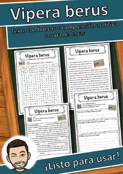
Vipera berus – Ficha de lectura: texto con huecos, comprensión auditiva y sopa de letras
Vino – Ficha de lectura: texto con huecos, comprensión auditiva y sopa de letras

Viejo Oeste – Ficha de lectura: texto con huecos, comprensión auditiva y sopa de letras
Vida extraterrestre – Ficha de lectura: texto con huecos, comprensión auditiva y sopa de letras
Veterinario – Ficha de lectura: texto con huecos, comprensión auditiva y sopa de letras
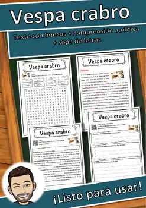
Vespa crabro – Ficha de lectura: texto con huecos, comprensión auditiva y sopa de letras

Roma – Ficha de lectura: texto con huecos, comprensión auditiva y sopa de letras
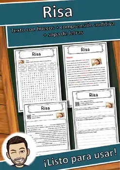
Risa – Ficha de lectura: texto con huecos, comprensión auditiva y sopa de letras

República de Weimar – Ficha de lectura: texto con huecos, comprensión auditiva y sopa de letras

Reino de los francos en la época merovingia – Ficha de lectura: texto con huecos, comprensión auditiva y sopa de letras

Red de saneamiento – Ficha de lectura: texto con huecos, comprensión auditiva y sopa de letras

Peloponeso – Ficha de lectura: texto con huecos, comprensión auditiva y sopa de letras
Peca – Ficha de lectura: texto con huecos, comprensión auditiva y sopa de letras
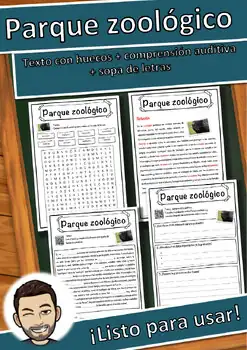
Parque zoológico – Ficha de lectura: texto con huecos, comprensión auditiva y sopa de letras
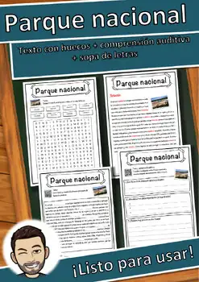
Parque nacional – Ficha de lectura: texto con huecos, comprensión auditiva y sopa de letras

Paraíso – Ficha de lectura: texto con huecos, comprensión auditiva y sopa de letras
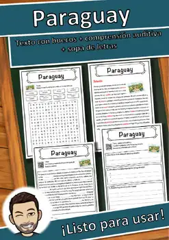
Paraguay – Ficha de lectura: texto con huecos, comprensión auditiva y sopa de letras
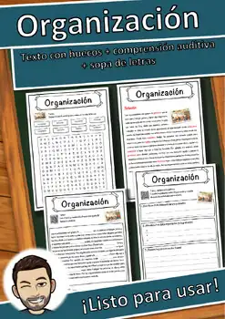
Organización – Ficha de lectura: texto con huecos, comprensión auditiva y sopa de letras
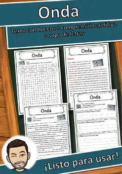
Onda – Ficha de lectura: texto con huecos, comprensión auditiva y sopa de letras
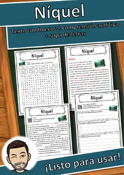
Níquel – Ficha de lectura: texto con huecos, comprensión auditiva y sopa de letras
Meitnerio – Ficha de lectura: texto con huecos, comprensión auditiva y sopa de letras
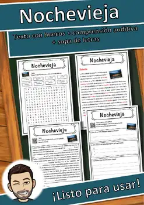
Nochevieja – Ficha de lectura: texto con huecos, comprensión auditiva y sopa de letras

Nivel del mar – Ficha de lectura: texto con huecos, comprensión auditiva y sopa de letras
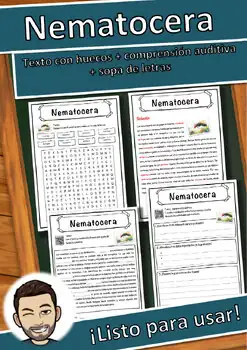
Nematocera – Ficha de lectura: texto con huecos, comprensión auditiva y sopa de letras

Naturaleza salvaje – Ficha de lectura: texto con huecos, comprensión auditiva y sopa de letras
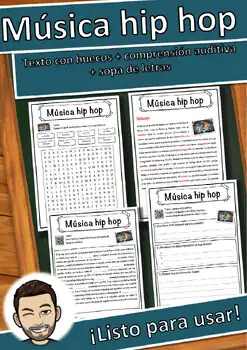
Música hip hop – Ficha de lectura: texto con huecos, comprensión auditiva y sopa de letras

Máquina – Ficha de lectura: texto con huecos, comprensión auditiva y sopa de letras
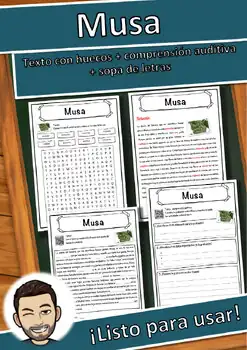
Musa – Ficha de lectura: texto con huecos, comprensión auditiva y sopa de letras

Municipio – Ficha de lectura: texto con huecos, comprensión auditiva y sopa de letras

Montes Urales – Ficha de lectura: texto con huecos, comprensión auditiva y sopa de letras

Monte Elbrús – Ficha de lectura: texto con huecos, comprensión auditiva y sopa de letras

Mito – Ficha de lectura: texto con huecos, comprensión auditiva y sopa de letras

Misisipi – Ficha de lectura: texto con huecos, comprensión auditiva y sopa de letras
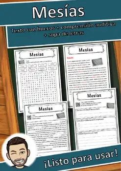
Mesías – Ficha de lectura: texto con huecos, comprensión auditiva y sopa de letras
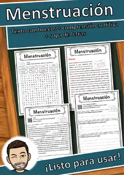
Menstruación – Ficha de lectura: texto con huecos, comprensión auditiva y sopa de letras

María Teresa I de Austria – Ficha de lectura: texto con huecos, comprensión auditiva y sopa de letras
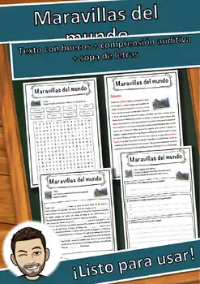
Maravillas del mundo – Ficha de lectura: texto con huecos, comprensión auditiva y sopa de letras

Mar Caspio – Ficha de lectura: texto con huecos, comprensión auditiva y sopa de letras
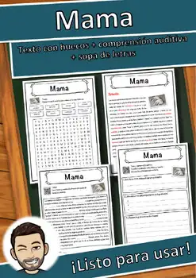
Mama – Ficha de lectura: texto con huecos, comprensión auditiva y sopa de letras
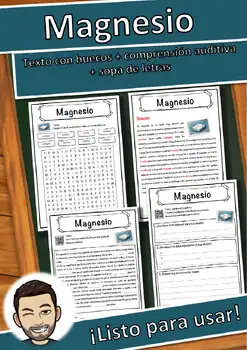
Magnesio – Ficha de lectura: texto con huecos, comprensión auditiva y sopa de letras
Magia – Ficha de lectura: texto con huecos, comprensión auditiva y sopa de letras
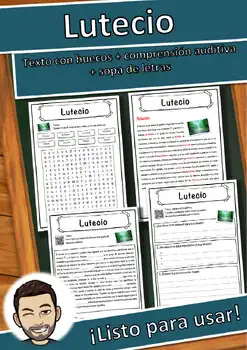
Lutecio – Ficha de lectura: texto con huecos, comprensión auditiva y sopa de letras

Sistema solar – Ficha de lectura: texto con huecos, comprensión auditiva y sopa de letras

Sistema de escritura – Ficha de lectura: texto con huecos, comprensión auditiva y sopa de letras

Silesia – Ficha de lectura: texto con huecos, comprensión auditiva y sopa de letras
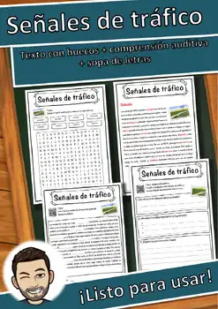
Señales de tráfico – Ficha de lectura: texto con huecos, comprensión auditiva y sopa de letras

Servicio de inteligencia – Ficha de lectura: texto con huecos, comprensión auditiva y sopa de letras
No se encontraron recursos. Prueba con otra palabra o con otro filtro.